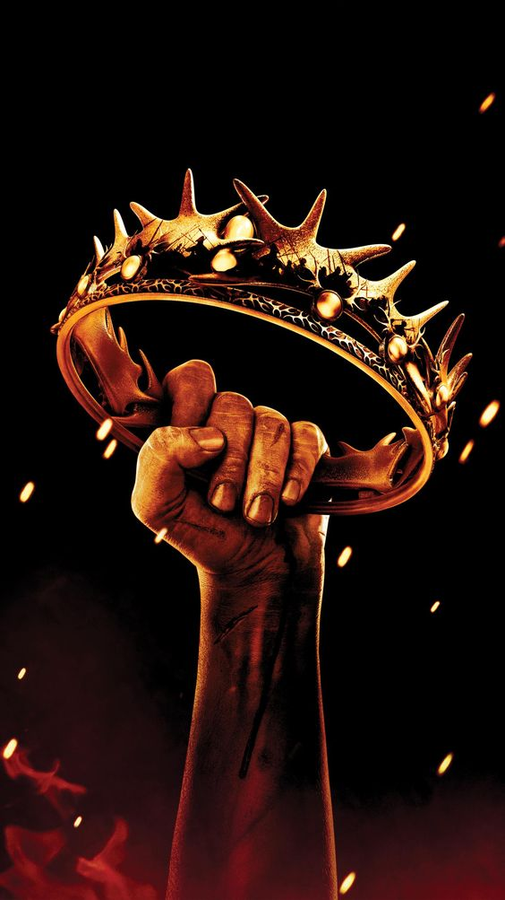
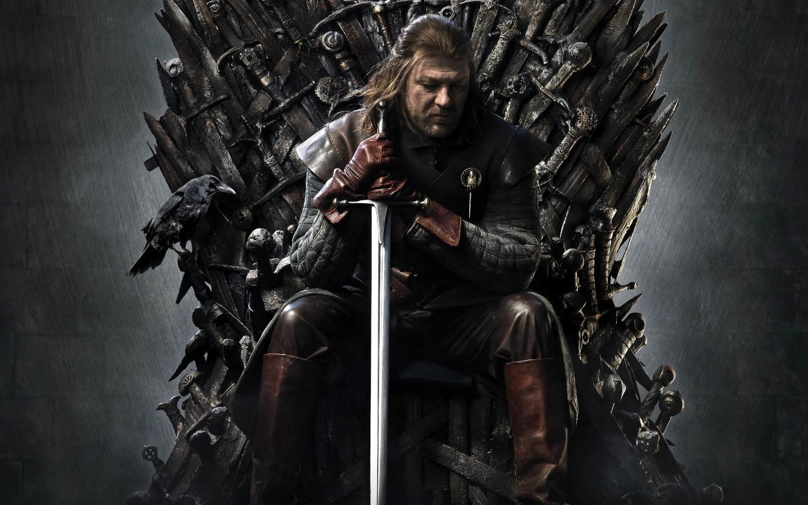
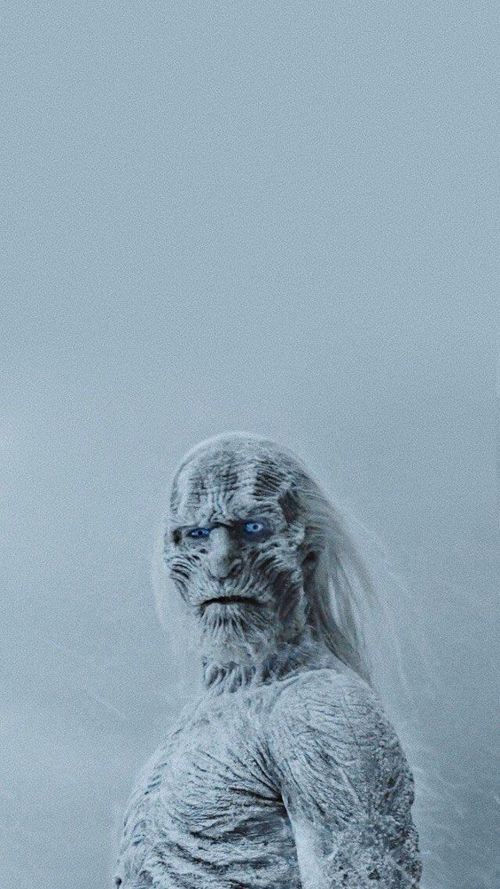
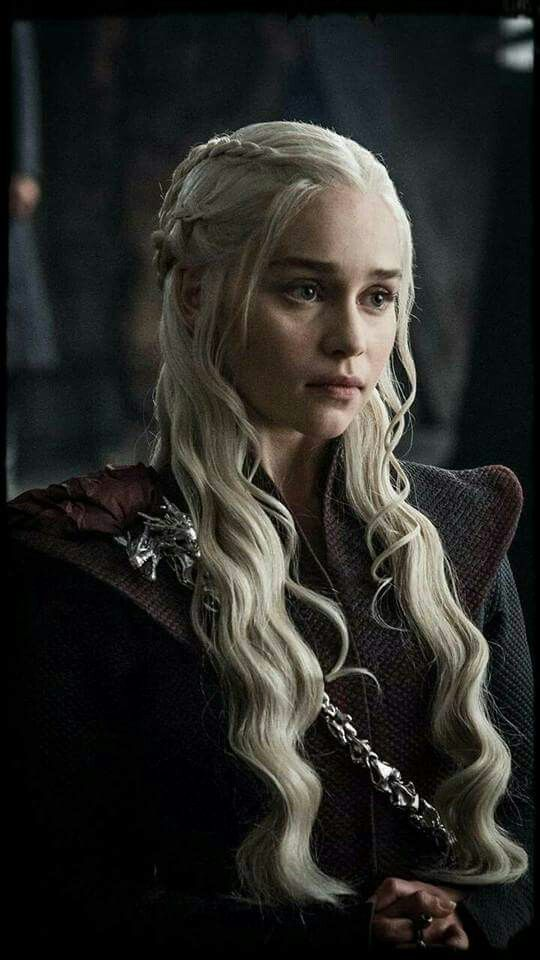
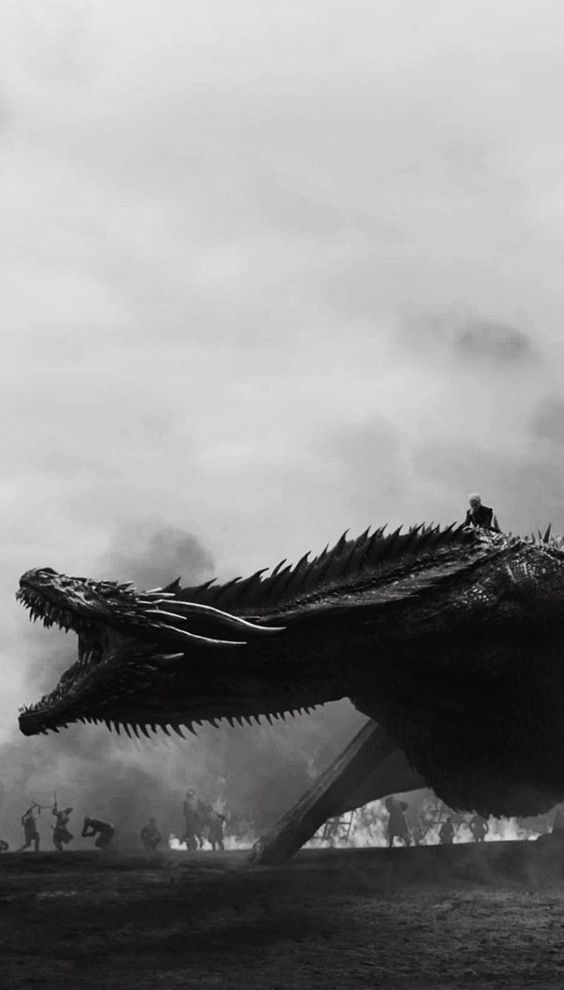
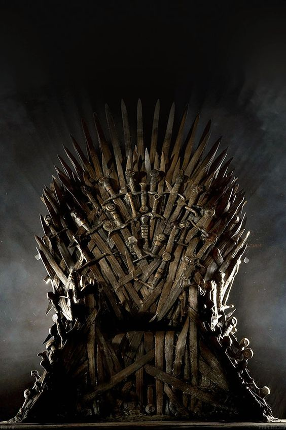
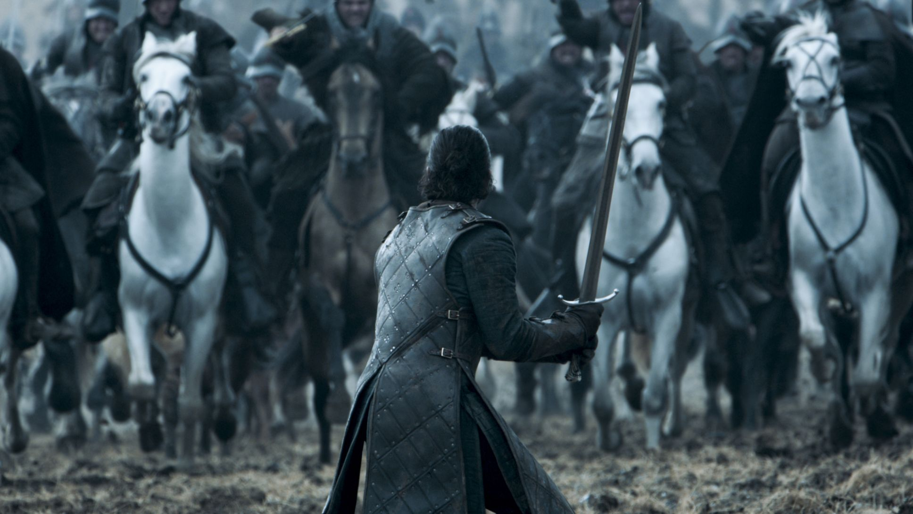

 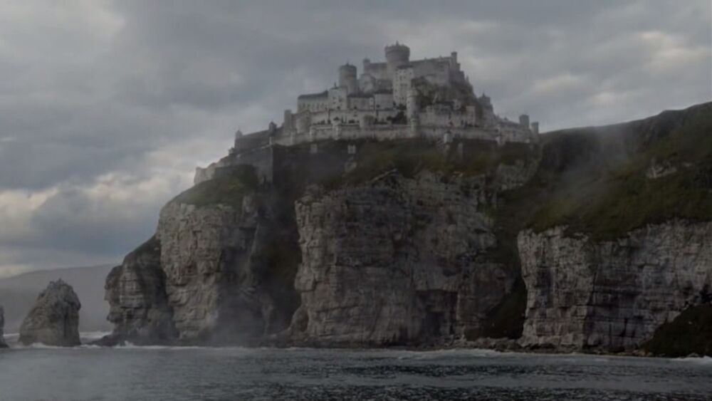
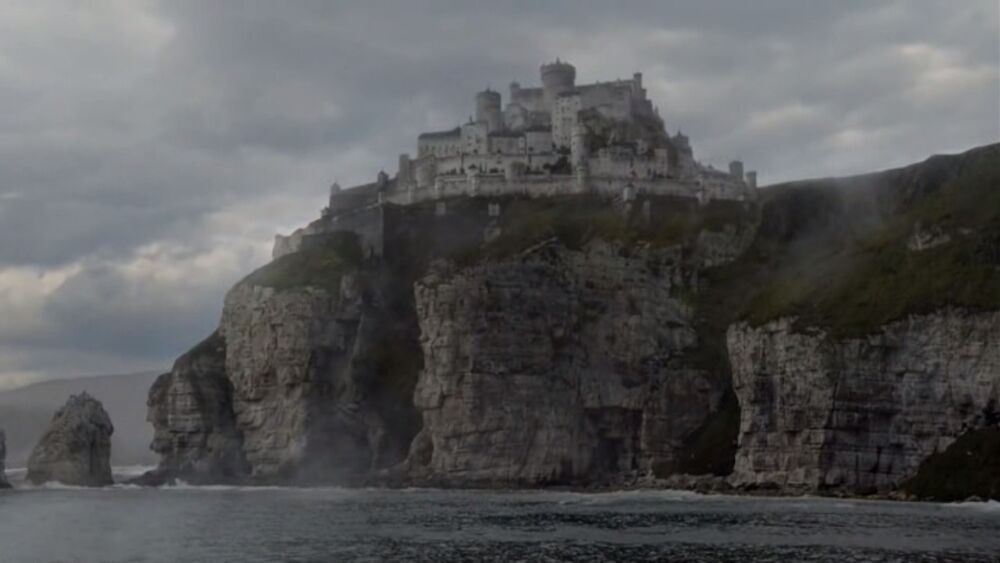
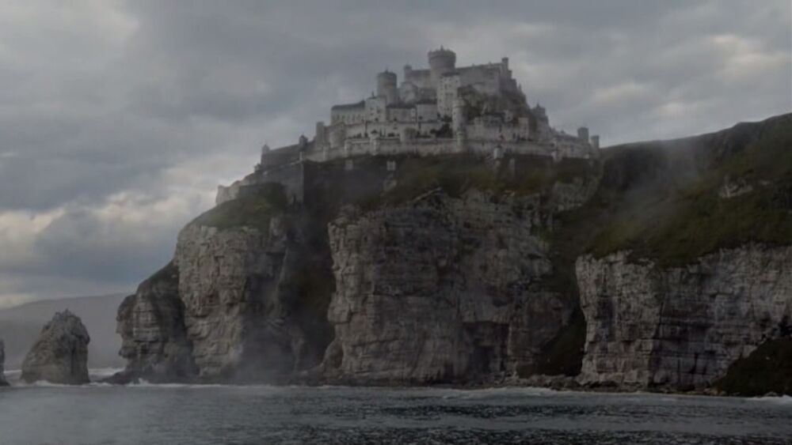
La primera temporada, que constó de diez episodios, comenzó el 17 de abril de 2011 con "Se acerca el Invierno" y finalizó el 19 de junio de ese mismo año con "Fuego y Sangre". El 19 de abril de 2011, con tan solo un episodio emitido, HBO anunció la renovación de la serie por una nueva temporada.
Al igual que la primera, la segunda temporada tuvo diez episodios y se estrenó el 1 de abril del 2012 con "El Norte no olvida" y finalizó el 3 de junio de ese mismo año con "Valar Morghulis". Las audiciones para los nuevos personajes comenzaron en mayo de 2011. Posteriormente se anunciaron una serie de contrataciones, las que se agregan a los ya actores regulares.
La tercera temporada tuvo diez episodios y se estrenó el 31 de marzo del 2013 con "Valar Dohaeris", y finalizó el 9 de junio de ese mismo año con "Mhysa".
La cuarta temporada tuvo diez episodios, al igual que las anteriores. Comenzó el 6 de abril de 2014 con "Dos espadas", y finalizó el 15 de junio de ese mismo año con "Los niños".
La quinta temporada tuvo diez episodios. Se estrenó el 12 de abril de 2015 con "Las guerras venideras" y finalizó el 14 de junio de 2015 con "Misericordia".
La serie se adapta a los acontecimientos de lo relatado en el libro de George RR Martin hasta la temporada número 4. Y la adaptación del contenido y omisión de secuencias en parte de la historia fueron por decision de los productores de HBO en consenso con el autor de la novela.
Cabe destacar que a partir de la temporada número 5 el contenido artístico es exclusivo de la cadena ya que la historia de los libros quedó estancada en el libro número 4.
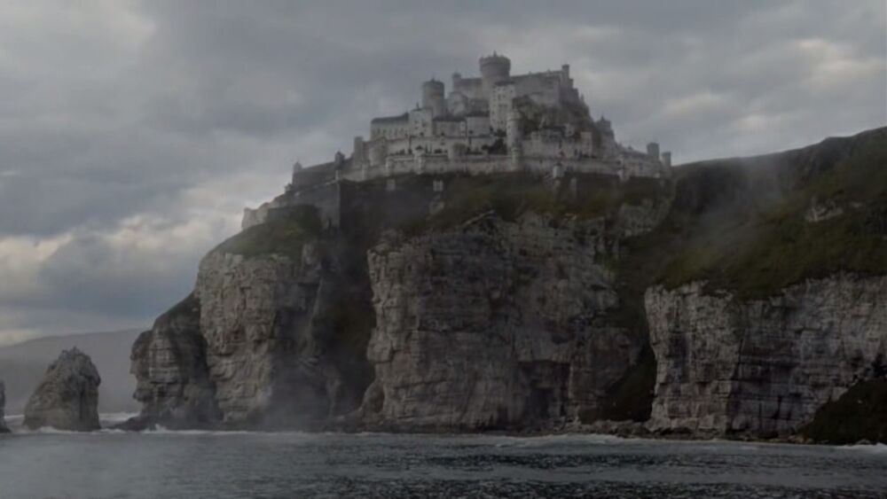